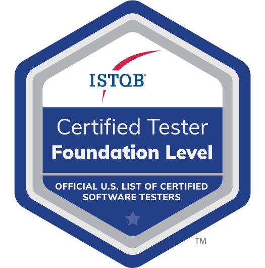

QA Engineer with six years in regulated, high-stakes environments.
ISTQB and Scrum certified, specialising in test automation, API validation and database integrity for FinTech and enterprise teams.
About
I'm a QA Engineer with 6+ years of experience in FinTech and enterprise environments, holding ISTQB CTFL certification. My background spans manual and automated testing across web applications, APIs and database layers, with a consistent focus on preventing defects early and releasing software that works.
I design and implement test strategies from scratch: writing test plans, defining acceptance criteria, building automated regression suites with Cypress, Selenium and Playwright, and validating APIs with Postman. I use SQL extensively to verify data integrity and trace root causes at the database level.
I thrive in Agile environments where quality is a shared responsibility, not a final gate. I'm now at Endpoint IQ in Brisbane, testing a research administration SaaS platform used by universities, and bringing FinTech-grade testing rigour and modern automation practices to the team.
What I do
Test strategy & planning
End-to-end test plans, risk-based coverage matrices and acceptance criteria aligned with business requirements, from sprint kick-off to release sign-off.
Test automation
Automated regression suites with Cypress, Selenium and Playwright inside CI/CD pipelines, cutting release cycle time without losing coverage.
API & integration testing
REST API validation with Postman and automated scripts, checking contracts, status codes, payloads and edge cases across service integrations.
Database & SQL testing
SQL queries to verify data integrity, validate business logic at the database layer and trace root causes of defects in relational systems (MySQL, PostgreSQL, SQLite).
Bug analysis & reporting
Defects documented with clear reproduction steps, severity classification and impact assessment, using JIRA and TestRail to keep dev and QA aligned.
Agile QA & CI/CD
Quality embedded into sprint workflows: refinement input, shift-left tests, and automated suites wired into Jenkins and GitHub Actions pipelines.
Certifications

ISTQB Certified Tester, Foundation Level (CTFL)
ISTQB, International Software Testing Qualifications Board · 2021
Scrum Foundation Professional Certificate
CertiProf · 2020
Automated Tests with Cypress
Udemy · 2022
Swagger: API Documentation
Alura Brasil · 2021
GitHub and Git
Alura Brasil · 2021